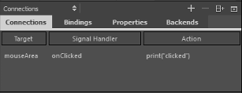

Connecting Objects to Signals
To receive a notification when a particular signal is emitted for a particular object, the object definition should declare a signal handler named on<Signal> where <Signal> is the name of the signal, with the first letter capitalized. The signal handler should contain the JavaScript code to be executed when the signal handler is invoked.
QML types have predefined signals that are emitted when users interact with the application. For example, the MouseArea type from the QtQuick module has a clicked signal that is emitted whenever the mouse is clicked within the area. Since the signal name is clicked, the signal handler for receiving this signal is named onClicked.
For more information about signals and signal handlers, see Signal and Handler Event System.
To access a signal outside of the object that emits it, you can use the Connections type for connecting to signals of arbitrary objects. A connections object can receive any signal from its specified target. You can connect objects to signals that are available to them in the Connections view.

To connect objects to signals:
- In the Connections view, select the Connections tab.
- Select the
 (Add) button to add a connection.
(Add) button to add a connection. - Double-click the value in the Target column to add the object to connect to a signal.
- Double-click the value in the Signal Handler column to select the signal that the connection will listen to from a list of all signals available for the object.
- Double-click the value in the Actions column to specify the action to perform when the signal is emitted. You use JavaScript to specify the actions.